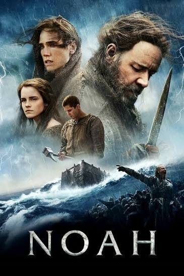
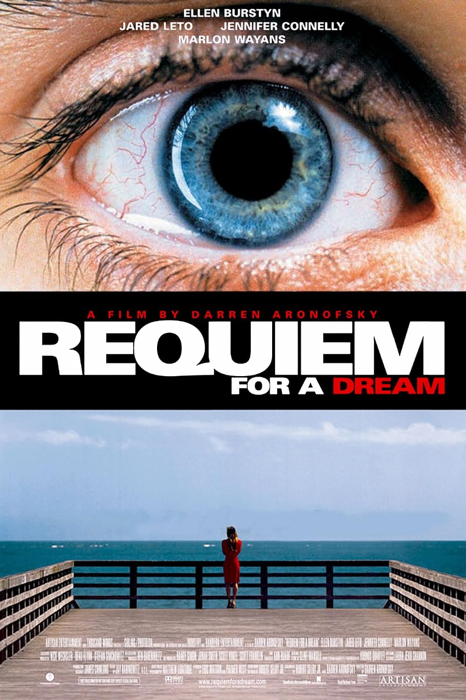
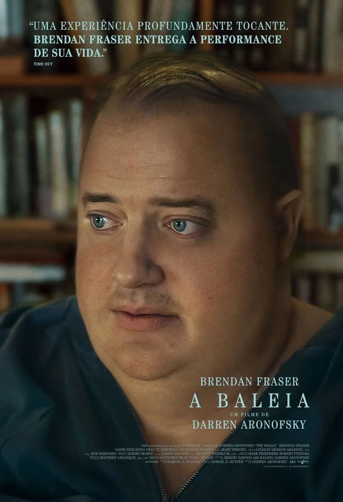
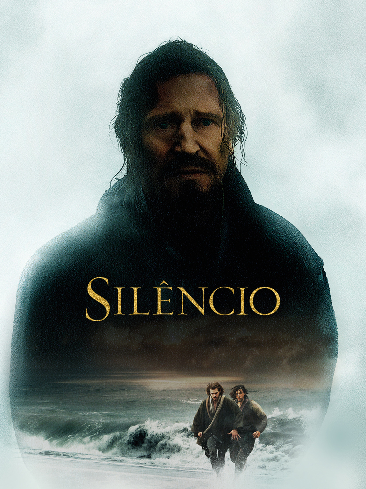
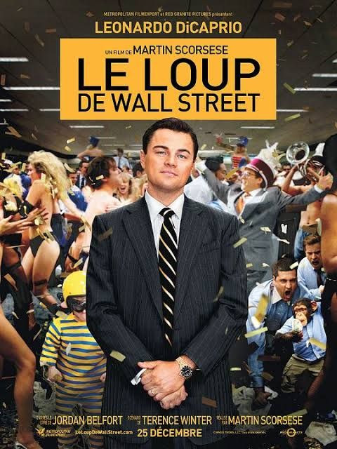
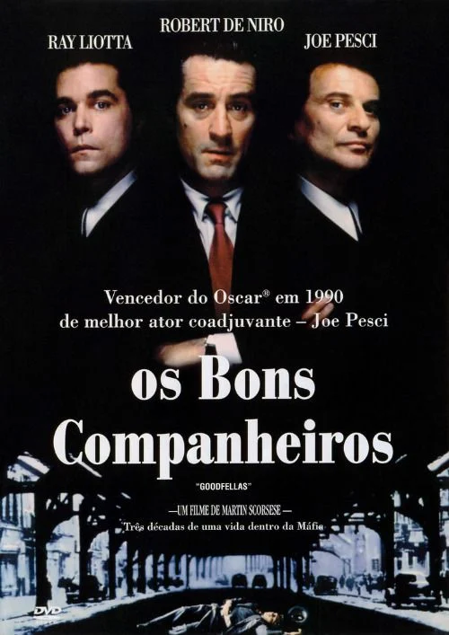
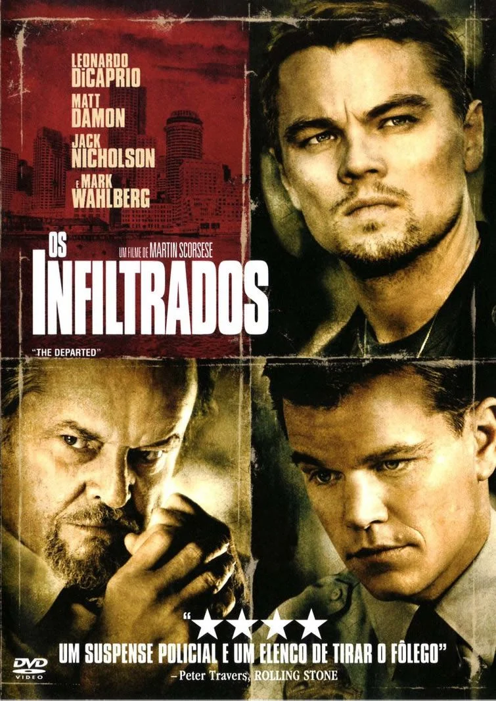

Darren Aronofsky
Cisne Negro
Nina Sayers é uma bailarina dedicada que consegue o papel principal em O Lago dos Cisnes. A busca pela perfeição e a pressão da companhia fazem sua realidade começar a se desintegrar.
Drama psicológico
de olho na sétima arte
Uma seleção de obras de Darren Aronofsky e Martin Scorsese.
Darren Aronofsky
Nina Sayers é uma bailarina dedicada que consegue o papel principal em O Lago dos Cisnes. A busca pela perfeição e a pressão da companhia fazem sua realidade começar a se desintegrar.
Drama psicológico

Darren Aronofsky
Inspirado na história bíblica de Noé, o filme acompanha um homem atormentado por visões de uma grande catástrofe e sua missão de preservar a vida diante de um mundo em colapso.
Drama épico

Darren Aronofsky
Quatro personagens perseguem sonhos diferentes, mas seus desejos acabam se transformando em obsessões. O filme retrata de forma brutal a deterioração causada pelo vício e pela dependência.
Drama

Darren Aronofsky
Charlie, um professor de inglês que vive recluso e enfrenta uma grave condição de saúde, tenta reconstruir sua relação com a filha enquanto lida com culpa, isolamento e arrependimento.
Drama

Martin Scorsese
Dois padres jesuítas viajam ao Japão do século XVII para procurar seu mentor desaparecido e testemunham a perseguição aos cristãos, colocando sua fé diante de situações extremas.
Drama histórico

Martin Scorsese
Jordan Belfort constrói uma enorme fortuna como corretor de ações em meio a um ambiente de excesso, fraude e corrupção. Sua ascensão é acompanhada pela deterioração de sua vida pessoal e profissional.
Comédia dramática

Martin Scorsese
Henry Hill cresce fascinado pelo mundo da máfia e entra para uma organização criminosa. O poder, o dinheiro e o prestígio conquistados dão lugar a paranoia, violência e consequências cada vez maiores.
Crime

Martin Scorsese
Um policial se infiltra em uma organização criminosa enquanto um informante da mesma organização entra para a polícia. Os dois lados tentam descobrir quem é o infiltrado antes que suas identidades sejam reveladas.
Crime e suspense